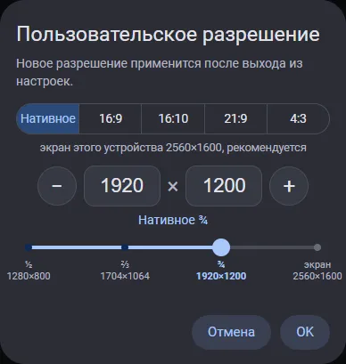

Два вида одного окна. В обоих сверху соотношение сторон с маленькой рамкой своей формы, «−» и «+» шагают по засечкам, засечки и подписи меняются с соотношением, «OK» не нажимается при неверных числах. В первом виде ещё окошко: как кадр ляжет на экран этого устройства, с полосами по бокам или сверху. Всё живое.
Сразу видно, заполнит ли картинка экран: выбрали 16:9 на Титане, в окошке появились полосы сверху и снизу и подпись. «Нативное» всегда заполняет экран целиком.
То же без окошка: окно ниже, о полосах говорит одна строка под полями.
Для сравнения. Доли экрана были дробями (½, ⅔, ¾); теперь проценты.

снимок прошлого В3